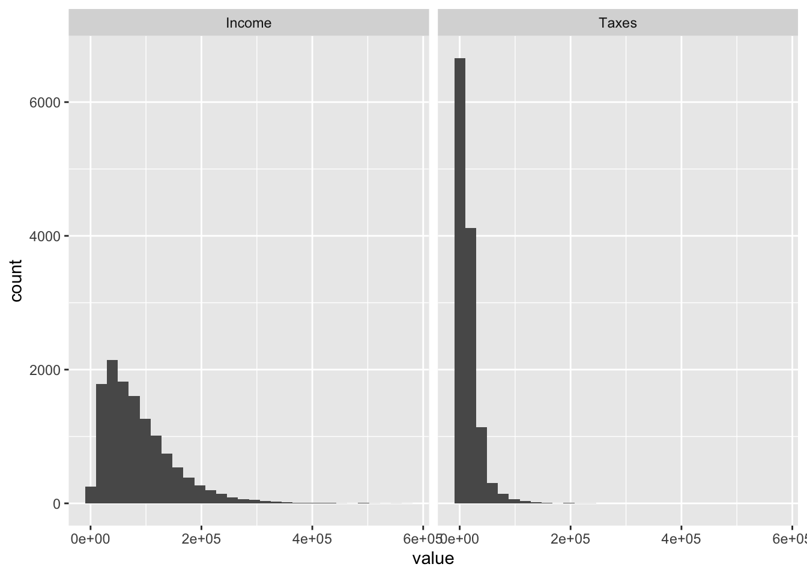

# tidyverse for lots of stuff
library(tidyverse)
# here for getting working directories
library(here)
# haven for importing datasets
library(haven)
#labelled to look through large datasets
library(labelled)
#crosstable package for crosstabs
library(crosstable)Bivariate Statistics
Bivariate Statistics or Measurements of Association
Univariate statistics (e.g. mean, median, mode, standard deviation) describe individual variables. We often want to describe the relationship between two variables.
To understand associations between variables it is essential to understand levels of measurement. This is a concept that is central to statistics and is implemented in R in ways that we have already met. ### Levels of measurement
In R, if you recall, variables can be of different types: numeric, character or factors. In statistics, the two largest categories of levels of measurements are: numeric and categorical variables.
Numeric variables can be continuous or discrete. Continuous variables can be subdivided into infinity. Examples include money (e.g. $50.555672828 makes sense), temperature (e.g. 24.234575828 C). Discrete variables are also numeric but cannot be meaningfully subdivided into decimals. For example, we might measure how many children a family has. this variable can only ever be integers (e.g. 1,2,3,4 or 0).
Categorical variables cannot be measured in terms of numbers. Examples of this might include a person’s sex (male or female), their field of study (political science or economics) or their province of residence.
Just because provinces are clearly categorical variables, does not stop us from storing them as numbers. The trick is conceptual. Saskatchewan is just different from Alberta, it is not one more than Alberta in the way that $10 is $1 greater than $9.
In R categorical variables are stored as factors meaning that each response is stored as a number and then a level is mapped to each number. It just saves on memory to do so.
Measuring the association between two variables depends on what level of measurement you are dealing with.
Import the data
Let’s import the shs dataset from the course_data subfolder.
#import data
shs<-read_sav(here("../course_data/shs.sav"))lookfor(shs, "province") pos variable label col_type missing values
3 Prov Geography chr+lbl 0 [14] Atlantic provinces
[24] Quebec
[35] Ontario
[46] Manitoba
[47] Saskatchewan
[48] Alberta
[59] British Columbia
[63] Territorial capitalsshs %>%
#Select income, taxes, dwelling type and housing tenure
select(Income=HH_TotInc, Taxes=TX001,Dwelling=DwelTyp, Tenure=Tenure, Province=Prov)->shs_subset
#glimpse
glimpse(shs_subset)Rows: 12,492
Columns: 5
$ Income <dbl> 100050, 114250, 52000, 56050, 46500, 133150, 158000, 38300, 3…
$ Taxes <dbl> 13500, 21500, 3950, 0, 600, 14700, 27100, 3900, 950, 0, 20500…
$ Dwelling <chr+lbl> "1", "1", "1", "3", "1", "3", "1", "3", "1", "2", "1", "3…
$ Tenure <chr+lbl> "1", "1", "2", "3", "2", "1", "1", "3", "3", "3", "2", "3…
$ Province <chr+lbl> "14", "24", "47", "63", "14", "59", "35", "48", "14", "14…Note that two of our variables are these chr+lbl. These we need to convert to factors. We can do thise by putting the whole data frame in as_factor
shs_subset<-as_factor(shs_subset)
#Compare now
glimpse(shs_subset)Rows: 12,492
Columns: 5
$ Income <dbl> 100050, 114250, 52000, 56050, 46500, 133150, 158000, 38300, 3…
$ Taxes <dbl> 13500, 21500, 3950, 0, 600, 14700, 27100, 3900, 950, 0, 20500…
$ Dwelling <fct> "Single detached", "Single detached", "Single detached", "Apa…
$ Tenure <fct> Owned with mortgage, Owned with mortgage, Owned without mortg…
$ Province <fct> Atlantic provinces, Quebec, Saskatchewan, Territorial capital…Numeric - Numeric
To test whether there is a relationship between two numeric variables, we can use the most basic form of correlation the Pearson correlation coefficient.
It takes an x and a y variable as its arguments. To access these, requires the data_frame$variable_name syntax.
cor(shs_subset$Income, shs_subset$Taxes)[1] 0.9098466A different type of correlation is the Spearman correlation which is meant for ordinal variables (think for example the level of education a person has completed or the job title a person has). These are categories but there is an order to them.
The spearman’s correlation coefficient is also useful for data that is not normally distributed.
This code produces two histograms that shows that our two variables are not normally distributed.
shs_subset %>%
pivot_longer(Income:Taxes) %>%
ggplot(., aes(x=value))+geom_histogram()+facet_grid(~name)
So we can specify using the Spearman correlation coefficient in this way.
cor(shs_subset$Income, shs_subset$Taxes, method=c("spearman"))[1] 0.9332988So, no surprise here, household income is highly correlated with the amount of taxes people pay.
Categorical - Categorical
Crosstabulations
We can’t use the same statistics to measure the strength of association between two categorical variables. Instead, we use the chi-squared statistic and Cramer’s V.
We start with a cross-tab of two categorical variables. The most basic command is table()
Let’s test whether or not there is a relationship between the dwelling type and the tenure of residence (e.g. owned or rented)
table(shs_subset$Dwelling, shs_subset$Tenure)
Owned with mortgage Owned without mortgage
Single detached 3523 3552
Double, row, terrace or duplex 575 357
Apartment or other 429 364
Rented
Single detached 655
Double, row, terrace or duplex 926
Apartment or other 2111A few things: notice that the variable that is first specified in the table() argument is showed in the rows. The table that is specified second is visible in the columns. Second, notice that these are frequencies i.e. just counts. On the surface of it, we can sort of see that there is a relationship, i.e. that most people wwho live in apartments also rent. But without calculating the percentages it is hard to tell.
Sometimes reversing the rows and columns can also be informative. When the crosstabulation is created this way we are (I think ) implicitly hypothesizing that the type of home a person lives in dictates the financing. But maybe it is actually the reverse. A person can only afford to rent and so the end up in an apartment rather than a single-detached home.
We can just reverse the arguments. At the same time, I can also show you the with() argument. It loads the data frame for the following arguments and makes it a bit quicker to run.
with(shs_subset, table(Tenure, Dwelling)) Dwelling
Tenure Single detached Double, row, terrace or duplex
Owned with mortgage 3523 575
Owned without mortgage 3552 357
Rented 655 926
Dwelling
Tenure Apartment or other
Owned with mortgage 429
Owned without mortgage 364
Rented 2111Notice that this gives us a little bit more information: We also get the variable names printed and that can be helpful!
To get a table of percentages, we use the command prop.table().
Sometimes, we will want to save the table() output in an object and then reuse that.
#Save the table
tab1<-with(shs_subset, table(Tenure, Dwelling))
#print
tab1 Dwelling
Tenure Single detached Double, row, terrace or duplex
Owned with mortgage 3523 575
Owned without mortgage 3552 357
Rented 655 926
Dwelling
Tenure Apartment or other
Owned with mortgage 429
Owned without mortgage 364
Rented 2111#Wrap in prop.table
prop.table(tab1, 1) Dwelling
Tenure Single detached Double, row, terrace or duplex
Owned with mortgage 0.77821957 0.12701568
Owned without mortgage 0.83126609 0.08354786
Rented 0.17741062 0.25081257
Dwelling
Tenure Apartment or other
Owned with mortgage 0.09476474
Owned without mortgage 0.08518605
Rented 0.57177681Notice the 1 in prop.table() It specifies to calculate the proportions by row. Sometimes you will want column percentages in which case you provide a 2. And not providing a 1 or a 2 provides the corner percentages, meaning the percentage of the whole table that is in each cell.
In Table 1 we get 57.1% of people who rent living in an apartment with 77% of people who own with a mortgage living in a single, detached home. That certainly seems like there is a relationship. But it’s not a formal test.
We can do that with the chi-squared test. It takes a table object as its argument
chisq.test(tab1)
Pearson's Chi-squared test
data: tab1
X-squared = 4651.6, df = 4, p-value < 2.2e-16In this output we get the following information: - the chi-squared statistic is 4651.6 - the degrees of freedom (df) is 4 - the p-value (the probability that a table completely generated at random would generate this variation in cell values) is extremely low, less then 0.00000000000000002.
So, it is extremely unlikely a table like this would appear by chance alone.
But that does not tell us whether there is a strong association or not. For this, we can test Cramer’s V. It is in the rcompanion package, please install this if necessary.
#install.packages("rcompanion")
library(rcompanion)
cramerV(tab1)Cramer V
0.4315 This output gives is a Cramer’s V of 0.43, which is a moderate correlation.
Exporting Tables
Exporting crosstabulations of the type that we have been dealing with here is actually a little bit tricky. A lot of times, we want to have a table that produces both the raw counts from a table() command and the percentages from prop.table() but there is no ready-made built-in way to produce that in R. The easiest way to get at that stuff is with the tabyl function in the janitor package.
#install.packages('janitor')
library(janitor)Check the help page for the basic syntax.
?tabylWe provide the data and then the columns that we want to tabulate.
tabyl(shs_subset, Tenure) Tenure n percent
Owned with mortgage 4527 0.3623919
Owned without mortgage 4273 0.3420589
Rented 3692 0.2955492Notice that we get both the counts of each category and the proportions (in decimal format). We can convert those to percentages with some adorn_* functions.
tabyl(shs_subset, Tenure) %>%
adorn_pct_formatting() Tenure n percent
Owned with mortgage 4527 36.2%
Owned without mortgage 4273 34.2%
Rented 3692 29.6%The best way to export this output is to use the flextable() package. We pipe the output of tabyl) to as_flextable()
Multiple formats are available:
#install.package('flextable')
library(flextable)
#Save the flextable as crosstab1
tabyl(shs_subset, Tenure) %>%
adorn_pct_formatting() %>%
as_flextable()->tabyl1
#Save crosstab1 as an html file
save_as_html(tabyl1, path=here("table1.html"))
# save as word document
save_as_docx(tabyl1, path="table1.docx")We can also specify two variables to come up with a crosstabulation of two variables.
tabyl(shs_subset, Dwelling, Tenure) Dwelling Owned with mortgage Owned without mortgage
Single detached 3523 3552
Double, row, terrace or duplex 575 357
Apartment or other 429 364
Rented
655
926
2111It’s not that hard to get the percentages and the counts in one table.
tabyl(shs_subset, Dwelling, Tenure) %>%
adorn_percentages() Dwelling Owned with mortgage Owned without mortgage
Single detached 0.4557568 0.4595084
Double, row, terrace or duplex 0.3094726 0.1921421
Apartment or other 0.1477273 0.1253444
Rented
0.0847348
0.4983854
0.7269284By default those return the row percentages, but we can get the column percentages by using the denominator argument.
tabyl1<-tabyl(shs_subset, Dwelling, Tenure) %>%
adorn_percentages(denominator="col")
#print
tabyl1 Dwelling Owned with mortgage Owned without mortgage
Single detached 0.77821957 0.83126609
Double, row, terrace or duplex 0.12701568 0.08354786
Apartment or other 0.09476474 0.08518605
Rented
0.1774106
0.2508126
0.5717768Then we can format those percentages to be a bit neater and add the n’s back in. Note, that this must happe in a particular order. First, the percentages must be formatted, then the n’s added back in.
tabyl1<-tabyl(shs_subset, Dwelling, Tenure) %>%
#Add the column percentages
adorn_percentages(denominator="col") %>%
#Format the percentages neatly
adorn_pct_formatting %>%
#Add the ns back in
adorn_ns()
#print
tabyl1 Dwelling Owned with mortgage Owned without mortgage
Single detached 77.8% (3,523) 83.1% (3,552)
Double, row, terrace or duplex 12.7% (575) 8.4% (357)
Apartment or other 9.5% (429) 8.5% (364)
Rented
17.7% (655)
25.1% (926)
57.2% (2,111)WE can also add row and column totals for extra infromation
tabyl1<-tabyl(shs_subset, Dwelling, Tenure) %>%
#Add the totals
adorn_totals("both") %>%
#Add the column percentages
adorn_percentages(denominator="col") %>%
#Format the percentages neatly
adorn_pct_formatting() %>%
#Add the ns back in
adorn_ns()
#print
tabyl1 Dwelling Owned with mortgage Owned without mortgage
Single detached 77.8% (3,523) 83.1% (3,552)
Double, row, terrace or duplex 12.7% (575) 8.4% (357)
Apartment or other 9.5% (429) 8.5% (364)
Total 100.0% (4,527) 100.0% (4,273)
Rented Total
17.7% (655) 61.9% (7,730)
25.1% (926) 14.9% (1,858)
57.2% (2,111) 23.2% (2,904)
100.0% (3,692) 100.0% (12,492)tabyl() can also create a three-way table. Let’s see if we can the relationship between housing dwelling and housing tenure changes by province. Do make this simpler, let’s just compare Ontario and Quebec.
tabyl2<-shs_subset %>%
#Just filter the provinces of Ontario and Quebec
filter(Province=="Ontario"|Province=="Quebec") %>%
# Make the tabyl with Dwelling, Tenure and province
tabyl(., Dwelling, Tenure, Province) %>%
#Add the percentages
adorn_percentages() %>%
#format the percentages
adorn_pct_formatting %>%
#add the ns
adorn_ns()
tabyl2$Quebec
Dwelling Owned with mortgage Owned without mortgage
Single detached 53.0% (409) 41.2% (318)
Double, row, terrace or duplex 32.6% (77) 25.8% (61)
Apartment or other 12.5% (77) 7.6% (47)
Rented
5.7% (44)
41.5% (98)
79.9% (492)
$Ontario
Dwelling Owned with mortgage Owned without mortgage
Single detached 43.7% (414) 48.7% (462)
Double, row, terrace or duplex 43.8% (123) 20.3% (57)
Apartment or other 8.8% (36) 12.7% (52)
Rented
7.6% (72)
35.9% (101)
78.4% (320)Exporting a tabyl is a lot easier than exporting a table() or prop.table(). It’s one of the major reasons I use it. There are three leading packages that export output from R into something useable: knitr and kableExtra combined, gt and flextable. I’m going to suggest we use flextable. First we have to convert the tabyl we want to save to a flextable object with as_flextable then we can use a series of save_as_* functions to save it out.
WE can save it as an html file, a docx or a powerpoint. Or even an image like a jpeg.
#install.packages('flextable')
library(flextable)
tabyl1<-tabyl1 %>%
#Convert to flextable
as_flextable()
#save as html
save_as_html(tabyl1, path=here("tabyl1.html"))
#save as png
save_as_image(tabyl1, path=here("tabyl1.png"))[1] "/Users/skiss/Library/CloudStorage/OneDrive-WilfridLaurierUniversity/Courses/RLISPOP/06_Bivariate_Statistics/tabyl1.png"#save as powerpoint
save_as_pptx(tabyl1, path=here("tabyl1.pptx"))
#save as docx
save_as_docx(tabyl1, path=here("tabyl1.docx"))Categorical - Numeric
I think there are some measures of association between a categorical variable and numeric variables, but, honestly, the best way tot ackle that is with the linear model or OLS regression, which is coming up.